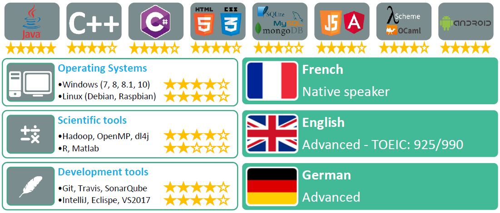
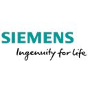
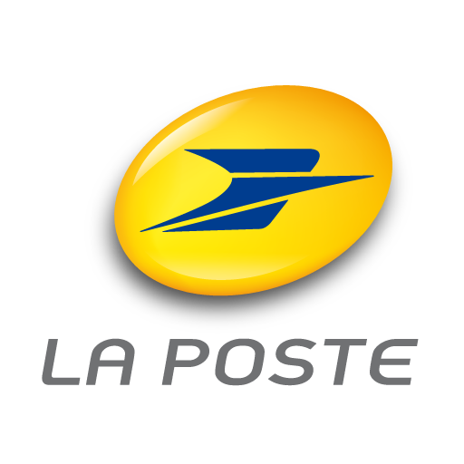
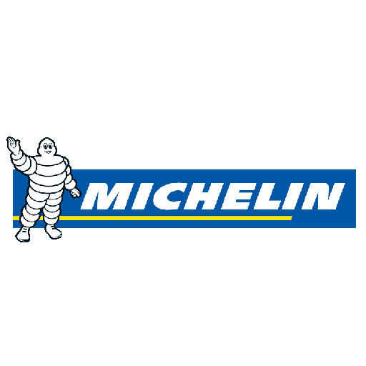
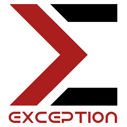
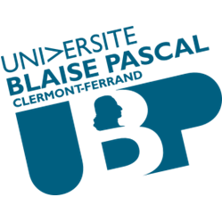
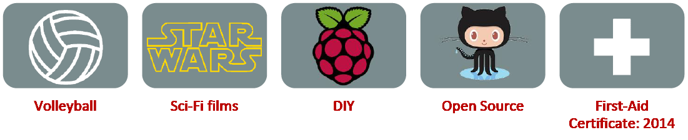

<main class="container">

  <div class="article-group text-center">

    <section class="row vcenter">
      <article class="col-sm-6">
        
        <h1>Benoît <strong>Garçon</strong></h1>
        <p>
          I am passionate about computer engineering and am looking for a stimulating job in area close to my heart: deep learning. I would like to work on a project which would be original and containing complex problems to solve.
        </p>
      </article>
      <article class="col-sm-6 vcenter">
        <h1 class="vcenter">Deep Learning Engineer</h1>
        <a href="https://github.com/begarco/resume/raw/master/Benoit_GARCON_resume_en.pdf" class="btn btn-danger btn-lg">
          <span class="glyphicon glyphicon-cloud-download"></span> Download my resume [EN]
        </a>
        <a href="https://github.com/begarco/resume/raw/master/Benoit_GARCON_resume_fr.pdf" class="btn btn-danger btn-lg">
          <span class="glyphicon glyphicon-cloud-download"></span> Download my resume [FR]
        </a>
      </article>
    </section>


    <section class="col-sm-12">
      <h2>Education</h2>
      <article class="resume-item">
        <h3>Double Diploma Research Master in Computer Science and ISIMA Engineer</h3>
        <p><strong>Université Blaise Pascal (UBP) in Clermont-Ferrand, France</strong><br/>
        <strong>Institut Supérieur d’Informatique, de Modélisation et de leurs Applications</strong></p>
        <p>Currently in the last year at university for a Research Master in Computer Science, option Imaging and at a French College of Engineering in Computer Science delivering a diploma equivalent to a Master’s Degree in Engineering, option Software Engineering & Information Systems.</p>
        <p><em>Course: designing, imaging, OOP, data mining, neural network, vr, simulation, …</em><br/>
        <em>First highest class average</em><br/>
        <em>Graduation date: 30th September 2017</em></p>
      </article>
      <article class="resume-item">
        <h3>Two-year university degree in Computer Science and DU Prep’ISIMA</h3>
        <p><strong>UBP / ISIMA in Clermont-Ferrand, France</strong></p>
        <p><em>Second highest class average</em></p>
      </article>
      <article class="resume-item">
        <h3>Baccalauréat série S mention Très Bien (with distinction)</h3>
        <p><strong>Lycée Jeanne d'Arc in Clermont-Ferrand, France</strong></p>
      </article>

    </section>

    <section class="col-sm-12">
      <h2>Key skills</h2>
      
    </section>

    <section class="col-sm-12">
      <h2>Project history</h2>
      <article class="resume-item">
        <a href="https://github.com/begarco"></a>
        <p>You can have a look on my GitHub repositories by clicking on the GitHub logo.</p>
        <p>Some of my projects are briefly described in the pdf version.</p>
        <p>I recommend you to have a look on:
          <a href="https://github.com/WatchDogZZ">WatchDogZZ</a>,
          <a href="https://github.com/WordCloudZZ">WordCloudZZ</a>,
          <a href="https://github.com/AvatarZZ">AvatarZZ</a>,
          <a href="https://github.com/ISIMA-begarco/Ragnar">Ragnar</a>,
          <a href="https://github.com/ISIMA-begarco/SpectralClustering">SpectralClustering</a>.
        </p>
      </article>
    </section>

    <section class="col-sm-12">
      <h2>Work & organization experience</h2>
      <article class="resume-item">
        <h3>Six-month internship by CNES (French Space Agency)</h3>
        
        <div>
          <p><strong>Toulouse, France</strong></p>
          <p>Mandatory internship asked for the last year at ISIMA. Work on code analysis
            tools in the software quality assurance team. Development of an intuitive
            solution to perform source code audits based on SonarQube.</p>
          <p><em>From April 2017 to October 2017</em></p>
        </div>
      </article>
      <article class="resume-item">
        <h3>Five-month internship by Siemens AG</h3>
        
        <div>
          <p><strong>Karlsruhe, Germany</strong></p>
          <p>Mandatory five-month internship asked for the second year at ISIMA. Working
            on web technologies (JS, Angular) in a research and development team.</p>
          <p><em>From April 2016 to September 2016</em></p>
        </div>
      </article>
      <article class="resume-item">
        <h3>Postman at La Poste</h3>
        
        <div>
          <p><strong>Clermont-Ferrand, France</strong></p>
          <p><em>Summer 2015</em></p>
        </div>
      </article>
      <article class="resume-item">
        <h3>Skilled worker at Michelin</h3>
        
        <div>
          <p><strong>Clermont-Ferrand, France</strong></p>
          <p><em>Summer 2014</em></p>
        </div>
      </article>
      <article class="resume-item">
        <h3>President of Exception, a non-profit making student organization</h3>
        
        <div>
          <p><strong>Clermont-Ferrand, France</strong></p>
          <p>Management of a team to develop IT projects by students for students. Use of
            miscellaneous equipment like HTC Vive, robots, connected objects, video
            projectors, Kinect.</p>
          <p><em>From 2014 to 2017</em></p>
        </div>
      </article>
      <article class="resume-item">
        <h3>President of the student body council at University</h3>
        
        <div>
          <p><strong>Blaise Pascal University, Clermont-Ferrand, France</strong></p>
          <p>Management of a team to plan student’s spare time activities, discussion with
            partners and management of a large budget (5000€).</p>
          <p><em>From 2012 to 2014</em></p>
        </div>
      </article>
    </section>

    <section class="col-sm-12">
      <h2>Interests & activities</h2>
      
    </section>

    <section class="col-sm-12">
      <h2>References</h2>
      <article class="resume-item">
        <p><strong>Available upon request.</strong></p>
      </article>
    </section>

  </div>

</main>
